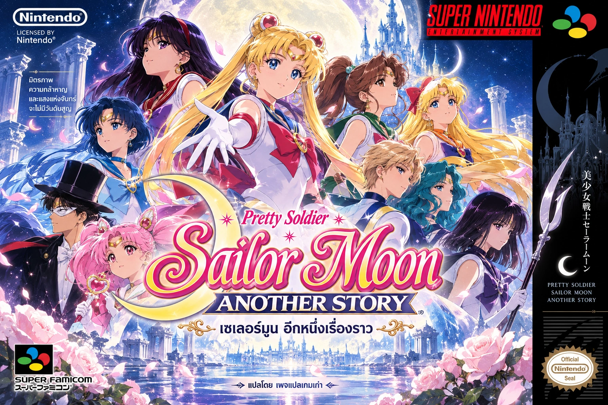
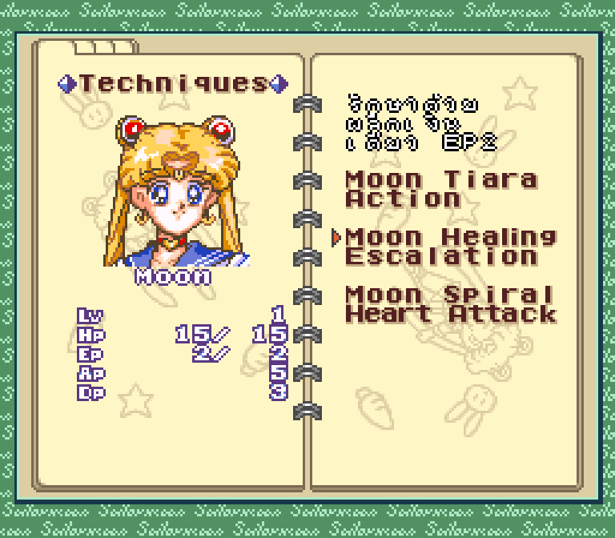

Sailor Moon Another Story
SNES · ภาษาไทย v1.0

แปลโดยเพจแปลเกมเก่า v1.0 — ฟอนต์ไทยที่วาดเอง ตัวอักษรสีขาวขอบดำบาง พร้อมคำอธิบายไอเทม ท่าโจมตี และข้อมูลตัวละครภาษาไทย เมนูและชื่อท่ายังคงเป็นอังกฤษ
ไฟล์ต้นฉบับที่รองรับทั้งสองรุ่น
กำลังโหลดข้อมูล…
Japan 3 MB หรือ English v2.08 4 MB (.sfc หรือ .smc) ระบบเลือกแพทช์ให้เอง รองรับ copier header 512 ไบต์ ไม่ต้องเปลี่ยนชื่อไฟล์ ทั้งสองรุ่นได้ไฟล์ไทยเดียวกัน- เลือก ROM ต้นฉบับของคุณตามรุ่นที่ระบุ
- ระบบตรวจไฟล์และแปะแพทช์ในเครื่องคุณ
- ดาวน์โหลดไฟล์ไทย แล้วเปิดในอีมูเลเตอร์
ไฟล์ ROM ไม่ถูกส่งขึ้นเซิร์ฟเวอร์
กำลังโหลดข้อมูลแพทช์…
ดาวน์โหลด ROM ภาษาไทย v1.0ขอบเขตของ v1.0
มีคำแปลเนื้อเรื่อง 3,355 จาก 3,357 รายการ คำอธิบาย 193 รายการ และข้อมูลตัวละคร 50 ช่อง คำแปลบางส่วนยังเป็นฉบับร่าง และยังไม่ได้ทดสอบเล่นจบเกม
ใช้เซฟในเกมเพื่อทดสอบรุ่นนี้ เริ่มจากการโหลด ROM ใหม่ เพราะ save state เก่าอาจเก็บฟอนต์และสีจากรุ่นก่อน
ตรวจสอบ SHA-256
ต้นฉบับ (หลังนำ header ออก)
ไฟล์ไทย v1.0